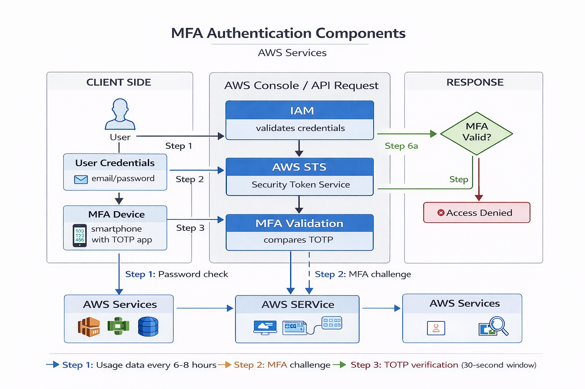

MFA Architecture
AWS Multi-Factor Authentication implements a challenge-response authentication mechanism requiring possession of a physical or virtual device in addition to knowledge-based credentials.

Figure 1: AWS MFA Authentication Architecture
Authentication Flow
The MFA authentication process involves the following technical components:
- Initial Authentication: User credentials (email/password or access key) are validated against IAM identity store
- MFA Challenge: AWS Security Token Service (STS) issues MFA challenge if policy requires second factor
- Token Generation: Authenticator device generates time-based one-time password (TOTP) or receives challenge for hardware tokens
- Token Validation: AWS validates the TOTP against expected value calculated using shared secret and current time
- Session Token Issuance: Upon successful validation, STS issues temporary security credentials with session token
Supported MFA Mechanisms
| MFA Type | Protocol | Token Format | Use Case |
|---|---|---|---|
| Virtual MFA | TOTP (RFC 6238) | 6-digit numeric | General purpose, cost-effective |
| Hardware Token | TOTP or HOTP | 6-8 digit numeric | Air-gapped environments |
| U2F Security Key | FIDO U2F | Cryptographic signature | Phishing-resistant authentication |
| FIDO2 Security Key | WebAuthn/CTAP2 | Cryptographic signature | Passwordless, phishing-resistant |
Authentication Protocols
TOTP (Time-based One-Time Password)
Virtual MFA devices implement RFC 6238 TOTP algorithm:
TOTP = HOTP(K, T)
where:
K = shared secret key (established during device enrollment)
T = (Current Unix Time - T0) / X
T0 = Unix epoch (0)
X = time step (typically 30 seconds)
HOTP(K, C) = Truncate(HMAC-SHA-1(K, C))
C = counter value (T for TOTP)
Output = 6-digit decimal numberKey Properties:
- Time synchronization between client and server critical (typically ±1 time step tolerance)
- Shared secret (K) established during QR code scan or manual entry
- 30-second validity window balances security and usability
- HMAC-SHA-1 provides cryptographic integrity
U2F/FIDO Protocol
Universal 2nd Factor (U2F) and FIDO2 provide phishing-resistant authentication through public-key cryptography:
- Registration: Security key generates unique public/private key pair for each service
- Authentication: Service sends challenge, key signs with private key, service verifies with stored public key
- Phishing Resistance: Private key never leaves hardware, origin-binding prevents credential reuse on phishing sites
Implementation Strategies
IAM Policy Enforcement
Enforce MFA through IAM condition keys:
{
"Version": "2012-10-17",
"Statement": [
{
"Sid": "DenyAllExceptListedIfNoMFA",
"Effect": "Deny",
"NotAction": [
"iam:CreateVirtualMFADevice",
"iam:EnableMFADevice",
"iam:GetUser",
"iam:ListMFADevices",
"iam:ListVirtualMFADevices",
"iam:ResyncMFADevice",
"sts:GetSessionToken"
],
"Resource": "*",
"Condition": {
"BoolIfExists": {
"aws:MultiFactorAuthPresent": "false"
}
}
}
]
}This policy denies all actions except MFA setup operations when MFA is not present in the request context.
Service Control Policies (SCP)
In AWS Organizations, enforce MFA at organizational level:
{
"Version": "2012-10-17",
"Statement": [
{
"Effect": "Deny",
"Action": "*",
"Resource": "*",
"Condition": {
"BoolIfExists": {
"aws:MultiFactorAuthPresent": "false"
},
"StringNotEquals": {
"aws:PrincipalArn": [
"arn:aws:iam::*:role/AllowedRoleWithoutMFA"
]
}
}
}
]
}Root Account Protection
Root user MFA is mandatory for compliance frameworks (PCI-DSS, SOC 2, ISO 27001). Implementation requirements:
- Hardware MFA token or U2F security key recommended over virtual MFA
- MFA device and backup codes stored in physically secured location (safe, HSM)
- Root credentials used only for account and billing management tasks requiring root access
- Alternative root user contacts configured for account recovery
Security Considerations
Threat Model
| Attack Vector | MFA Protection | Mitigation |
|---|---|---|
| Phished Credentials | ✓ Blocks (attacker lacks second factor) | Use U2F/FIDO for phishing resistance |
| Credential Stuffing | ✓ Blocks (valid password insufficient) | Combined with password rotation policies |
| Man-in-the-Middle | ⚠ Partial (depends on protocol) | U2F/FIDO provides origin-binding protection |
| SIM Swapping (SMS MFA) | ✗ Vulnerable | AWS doesn't support SMS; use TOTP/U2F |
| Malware on Device | ⚠ Reduced window (30-second TOTP) | Hardware tokens provide air-gap protection |
| Social Engineering | ⚠ User education critical | Technical controls + security awareness training |
Recovery and Continuity
MFA Device Loss Scenarios:
- Virtual MFA: Recovery via backup codes, account recovery process through AWS Support (requires identity verification), or alternative authentication method if configured
- Hardware Token: Backup device pre-enrolled, emergency access procedures documented, AWS Support recovery process
- U2F Key: Multiple keys enrolled (primary + backup), stored in separate physical locations
Business Continuity Planning:
- Document MFA device inventory and locations
- Establish break-glass procedures for emergency access
- Implement alternate root email addresses for account recovery
- Regular testing of recovery procedures (quarterly recommended)